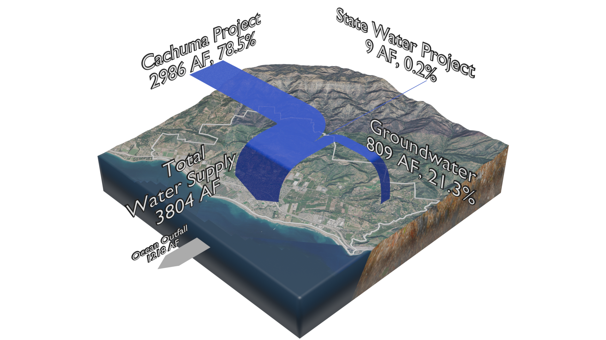

Reported historical actuals from the 2025 UWMP (Figure 4-1 / related tables). Provisional communication draft — not an official CVWD publication.
Historical supplies, 2011–2025
UWMP Figure 4-1. Reported actuals — not planning projections.

Could not load Sankey still for 2025.
Year
Supply (acre-feet)
- Groundwater
- —
- Cachuma (+ ID#1)
- —
- State Water
- —
- Total supply
- —
- Demand
- —
Source: UWMP Figure 4-1 / Table 4-3 · Historical actual · Provisional exhibit
Ribbon widths and the numbers above are driven by acre-feet transcribed from public UWMP tables. Select a year to swap the Sankey still and HUD values. Drought years such as 2015 and 2018 show how source shares shift when Cachuma deliveries fall.
Ocean Outfall on the figure is Carpinteria Sanitary District WWTP effluent to the Pacific — not CVWD customer demand.